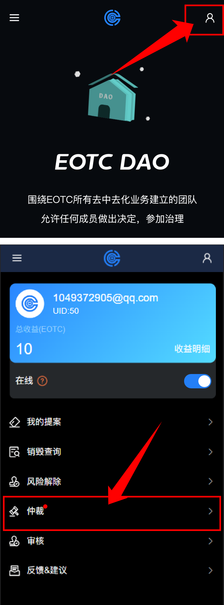
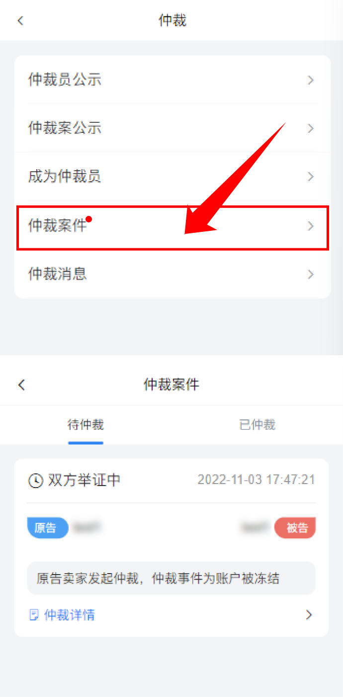
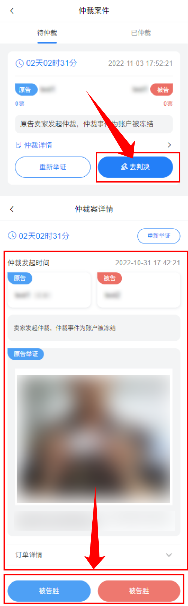

新手指引
>
处理仲裁案
处理仲裁案
处理仲裁案前提需要成为仲裁员，成为仲裁员后系统会根据在线状态分配仲裁案，当你有待处理的仲裁案件时系统会给您弹出一个提示框提醒
第一步: 我们需要先通过首页由上角进入个人菜单页面，这时个人菜单页面“仲裁”项显示小红点，有仲裁的新动态(仲裁案/仲裁消息)

第二步: 进入仲裁页面后，点击"仲裁案件"进入仲裁案件页面，显示"双方举证中"此状态时，仲裁员不能进行任何操作，可先了解此案件，便于后续做出判决

举证时间结束后，仲裁员有三天的时间对此案进行判决，点击列表中的去判决，进入仲裁案详情，查看原被告双方提交的举证，根据举证做出判决(提示:详情点击原被告可查看相关身份信息)

如果三天内无法对此案进行判决，该怎么处理
发起重新举证申请后，该仲裁案半数以上仲裁员通过申请即打回，原被告重新补充举证后可在根据新的举证，进行判决